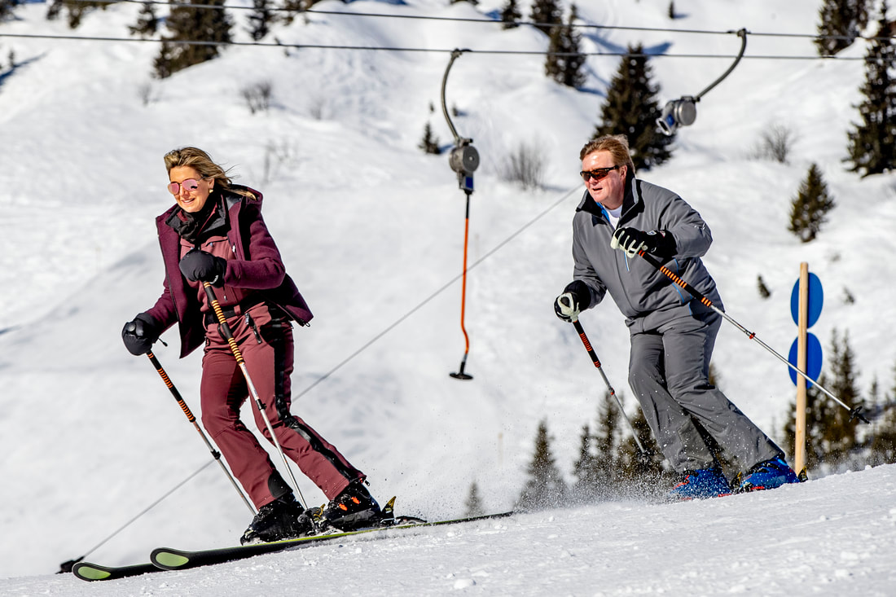

Wie zijn wij?
Beaumont is een skibedrijf opgericht in 2025 door Willie.
Tot op de dag van vandaag is hij nog steeds de volledige eigenaar van het bedrijf.
Willie houd erg van skivakanties, daarom zijn Beaumont en haar content geïnspireerd
op het prachtige hooggebergte van de Alpen.

Willie op vakantie in Lech
24-12-2024
Over Beaumont
- Onze oprichting: Beaumont werd opgericht in 2025 door Willie (prins pils) Alexander, met een passie voor skiën en het hooggebergte van de Alpen.
- Onze visie: Wij streven naar het verkopen van tijdloze en stijlvolle kleding die de geest van avontuur en comfort uitstraalt.
- Onze inspiratie: De bergen van de Alpen zijn onze grootste inspiratiebron voor de selectie van onze collecties.
- Onze waarden: Kwaliteit, duurzaamheid en exclusiviteit zijn de kernwaarden van Beaumont.
- Onze missie: Onze missie is om de beste luxe kleding te bieden, geïnspireerd door de natuur en het avontuur van de Alpen.